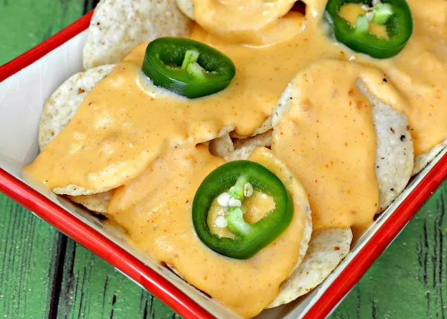

Nacho Cheese

Description
An essential recipe for movie lovers. Careful your eyes aren't glued to the plate instead!
Ingredients
- 1 ½ tablespoons butter
- 1 tablespoon cornstarch
- ½ cup milk, or more as needed
- 1 ½ cups shredded Cheddar cheese
- 2 tablespoons cream cheese
- 1 teaspoon taco seasoning mix
- ½ teaspoon hot pepper sauce
Steps
- Melt butter in a saucepan over medium-high heat.
- Whisk in cornstarch until paste forms, 30 seconds to 1 minute.
- Whisk in milk gradually until smooth, 1 to 2 minutes.
- Simmer until thickened to sauce consistency, about 2 minutes.
- Whisk Cheddar cheese, cream cheese, taco seasoning, and hot sauce into milk mixture until smooth, 1 to 2 minutes more.
- Add more milk as needed for desired consistency. Keep warm until ready to use.